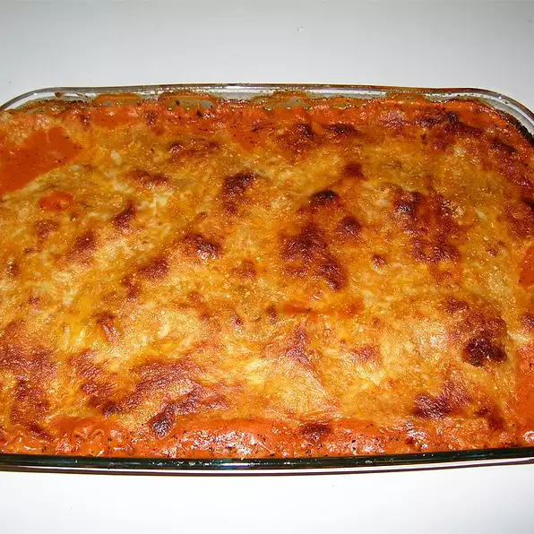

Lasagna

Four Cheese Lasagna
This is a classic lasagna recipe that is sure to please. It's made with a homemade tomato sauce, four cheeses, and a creamy béchamel sauce. It's a great dish to make for a crowd, and it's even better the next day!
Ingredients
- 16 ounces uncooked lasagna noodles
- 1 (26 ounce) can spaghetti sauce
- 1 pound cottage cheese
- 8 ounces shredded mozzarella cheese
- 8 ounces shredded Cheddar cheese
- 1 cup grated Parmesan cheese